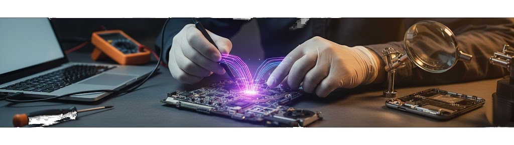

Expertise technique, tarifs imbatables et retour du produit dans les plus brefs délais
Parce qu'un ordinateur ou un smartphone est aujourd'hui indispensable à votre quotidien, je traite chaque
appareil avec la rigueur et la précision d'un expert. Spécialiste de la micro-soudure et de la maintenance
matérielle avancée, j'interviens là où les autres s'arrêtent.
Réparation PC & Mac : Remplacement d'écran, boost de performances, sauvetage de données et résolution de
pannes complexes.
Micro-Soudure : Intervention directe sur carte mère pour redonner vie à vos appareils plutôt que de les
remplacer.
Maintenance Préventive : Nettoyage complet et optimisation système pour prolonger la durée de vie de votre matériel.
Des tarifs transparents. Diagnostic gratuit .
Conseils & Optimisation
*Déduit de la réparation